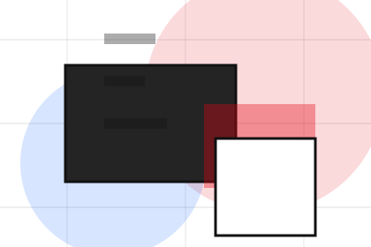
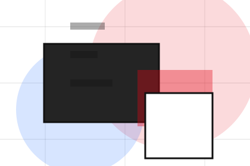
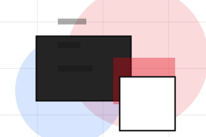
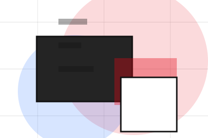
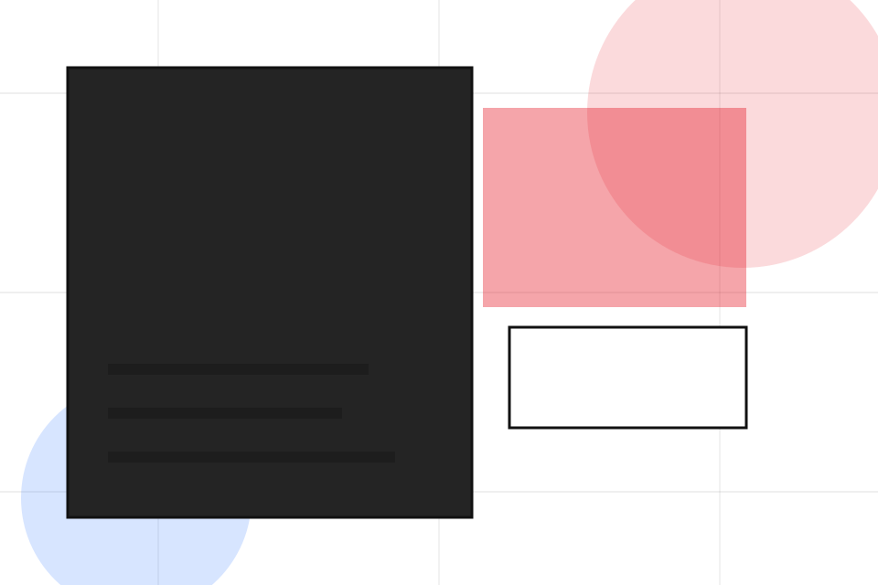
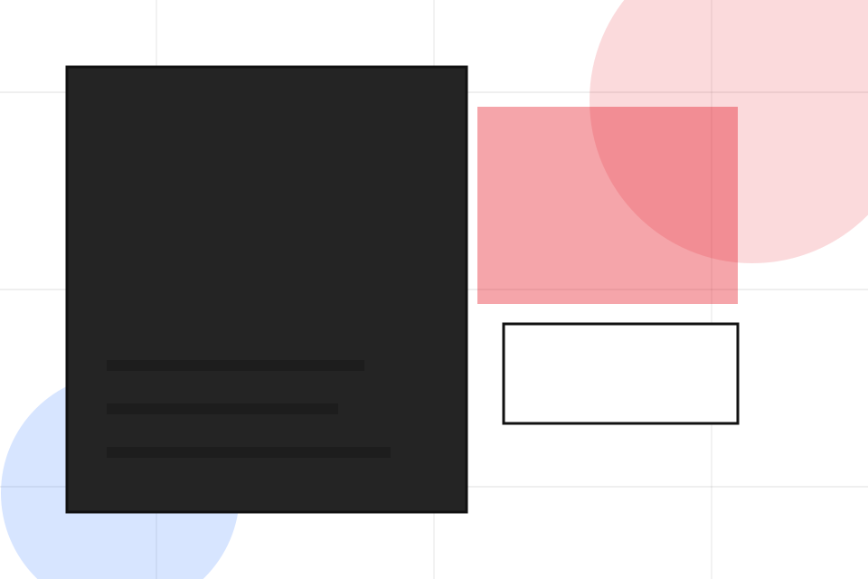
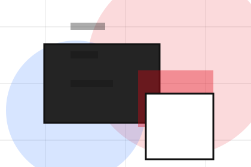
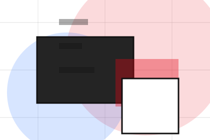
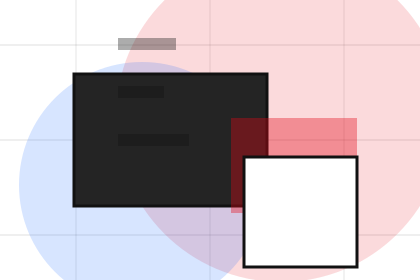
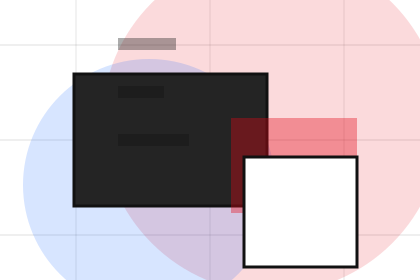

Studio
Open the studio route for philosophy, team, taste so creative, design & visual production visitors can compare context, proof, and next steps.
Open StudioHome / 01
Home opens as a clear creative decision hub: what Studio offers, who it helps, why it matters, and which route to take first.
The first screen combines positioning, proof, primary action, and fast internal navigation, so people can act immediately or compare the rest of the home route with context.
Typographic work hero
Select the closest route and Studio keeps the next step, proof, and follow-up expectation aligned with taste and production trust.

Site atlas
This homepage is the working index for creative, design & visual production: it explains the offer, points to every deeper page, and keeps the final action visible without making the visitor hunt.
A creative portfolio with identity-led project tiles, typographic scale, lightbox logic, and studio enquiry. The page links problem, promise, services, process, proof, questions, support, legal routes, and conversion paths into one clear decision map.
Open the studio route for philosophy, team, taste so creative, design & visual production visitors can compare context, proof, and next steps.
Open StudioOpen the work route for portfolio, branding, photo so creative, design & visual production visitors can compare context, proof, and next steps.
Open WorkOpen the services route for identity, production, direction so creative, design & visual production visitors can compare context, proof, and next steps.
Open ServicesOpen the process route for brief, concept, production so creative, design & visual production visitors can compare context, proof, and next steps.
Open ProcessOpen the journal route for trends, notes, cases so creative, design & visual production visitors can compare context, proof, and next steps.
Open JournalOpen the pricing route for identity, campaigns, retainers so creative, design & visual production visitors can compare context, proof, and next steps.
Open PricingOpen the shop route for templates, prints, assets so creative, design & visual production visitors can compare context, proof, and next steps.
Open ShopOpen the faq route for revisions, files, timelines so creative, design & visual production visitors can compare context, proof, and next steps.
Open FAQOpen the contact route for project, timeline, budget so creative, design & visual production visitors can compare context, proof, and next steps.
Open ContactReview the local assets, icons, OG images, and static handoff materials used by Studio.
Open Asset SystemUse the full sitemap to recover any route and verify the whole Studio structure.
Open SitemapRead the privacy route before sending personal details through the static form.
Open PrivacyManage consent and understand the privacy-safe analytics approach.
Open CookiesHome / 02
Positioning adds editorial context to the home route, using the graphic design portfolio grid structure to support taste and production trust before visitors choose a next step.
Studio uses identity project cards and focused copy to make the decision easier to scan, aligning the section with taste and production trust rather than filling space.
Open StudioPositioning gives the page a specific angle instead of repeating the navigation label.
The identity project cards show what to compare, what to avoid, and what matters most for creative, design & visual production visitors.
The final cue points to a useful internal route so the section keeps the journey moving.
Home / 03
Problem frames the pressure behind the visit, then connects it to a practical path visitors can recognise and act on.
The copy avoids blame and panic. It shows the common friction, the practical consequence, and the calmer route Studio uses to move people forward.
Open WorkProblem names the real friction visitors bring to the home route, so the page feels relevant before any claim is made.
The copy connects that friction to practical risk, delay, confusion, or missed opportunity without exaggerating it.
The final cue moves visitors toward a clearer route instead of leaving them with the problem alone.
Home / 04
Promise defines the better state Studio is built to create, with enough detail to make the promise believable.
A creative portfolio with identity-led project tiles, typographic scale, lightbox logic, and studio enquiry. The section grounds that direction in concrete benefits, visible tradeoffs, and a next route visitors can use when the promise feels relevant.
Open Services

Promise defines what becomes clearer, easier, or safer when Studio is the chosen route.
Home / 05
Work adds editorial context to the home route, using the graphic design portfolio grid structure to support taste and production trust before visitors choose a next step.
Studio uses identity project cards and focused copy to make the decision easier to scan, aligning the section with taste and production trust rather than filling space.
Open ProcessWork gives the page a specific angle instead of repeating the navigation label.

The identity project cards show what to compare, what to avoid, and what matters most for creative, design & visual production visitors.

The final cue points to a useful internal route so the section keeps the journey moving.


Home / 06
Services explains the practical scope, best-fit situations, and expected outcome so creative visitors can compare options without decoding jargon.
The section keeps the offer concrete: what is included, who it is best for, what decision it supports, and which linked route gives the deeper detail.
Open ServicesWho should use services and when it belongs in the home journey.
The practical benefit visitors should expect after choosing this route.

Where to compare details, pricing, support, or contact options before committing.
Typographic work hero
Select the closest route and Studio keeps the next step, proof, and follow-up expectation aligned with taste and production trust.
Home / 08
Recognition adds editorial context to the home route, using the graphic design portfolio grid structure to support taste and production trust before visitors choose a next step.
Studio uses identity project cards and focused copy to make the decision easier to scan, aligning the section with taste and production trust rather than filling space.
Open ShopRecognition gives the page a specific angle instead of repeating the navigation label.
The identity project cards show what to compare, what to avoid, and what matters most for creative, design & visual production visitors.
The final cue points to a useful internal route so the section keeps the journey moving.
Home / 09
Questions handles buying doubts directly so visitors can understand timing, fit, limits, and the safest next step.
Answers are short by design: enough to remove hesitation, not so much that the page turns into documentation before the visitor can act.
Open Contact
Questions gives the page a specific angle instead of repeating the navigation label.

The identity project cards show what to compare, what to avoid, and what matters most for creative, design & visual production visitors.

The final cue points to a useful internal route so the section keeps the journey moving.
Studio starts with a focused intake so the recommendation matches the visitor's context, risk, timing, and readiness.
Each route explains inclusions, exclusions, documents, timing, and the decision points that affect final delivery.
The theme uses graphic design portfolio grid, identity project cards, and portfolio filter, project lightbox, file/brief upload rather than a shared template rhythm.
Typographic work hero
Select the closest route and Studio keeps the next step, proof, and follow-up expectation aligned with taste and production trust.
Information is provided for planning and should be reviewed for the final client, location, and operating rules.
Home / 10
Studio closes the home route with a clear action, a quick reminder of the value, and a low-friction way to start the project.
Visitors who are ready can use the primary action. Visitors who are still comparing can scan the section links, proof, and support routes before they start the project.
Start ProjectThe final block keeps the choice simple: act now, compare one more proof route, or send enough detail for a focused response.
Start Projecttaste and production trust
A creative portfolio with identity-led project tiles, typographic scale, lightbox logic, and studio enquiry. Home ends with a direct path to start the project, plus enough context for visitors who still need to compare.
 Start Project
Start Project